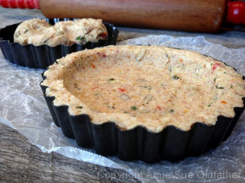
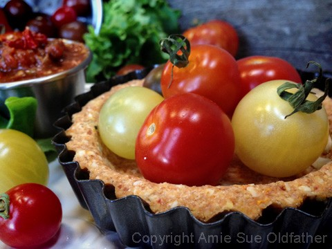

Sun-Dried Tomato and Basil Tart Crusts (savory crust)
Sun-Dried Tomato and Basil Tart Crusts
 ~ raw, vegan, gluten-free ~
~ raw, vegan, gluten-free ~
Tart crusts are becoming one of the new staple foods in my kitchen. They are easy to make, and after dehydrating, you can keep them stored in the freezer for at least a month.
I love to create full recipes and share them with you, but my other goal is to show you how to develop components so that you can piece together your own recipe creations.
So how does a savory tart crust become a staple? Suppose you made my Seafood Salad Spread or the Sun-Dried Tomato Hummus a few days ago and you have some leftovers of the recipe sitting in the fridge.
Remove a tart crust from the freezer, cover the bottom of the tart with the spread, top with some fresh cherry tomatoes, alfalfa sprouts, rain on some fresh cracked black pepper; voila! A new exciting creation just took place in your very own kitchen!
To create a variety of unique tart crust flavors make a few out of some of the cracker batters when you make crackers. Here are a few that I recommend; Chili Corn Crackers, Country Living Savory Crackers, or the Caramelized Onion Cracker. Keep in mind that the cracker batter needs to thick and moldable. So, if a cracker is flax-seed based, it wouldn’t mold well to create a crust. This particular crust pairs amazingly with the Sun-Dried Tomato Hummus.
Ingredients:
Yields 4 cups = 9 tart crusts ( roughly 5 1/2 Tbsp batter each)
Dry Ingredients:
Wet Ingredients:
- 1 large (2 cups diced) zucchini, peeled
- 2 Tbsp water
- 1 Tbsp cold-pressed olive
- 1/4 cup maple syrup
- 1 Tbsp coconut aminos
- 2 Tbsp fresh lemon juice
Hand mix in:
- 2 cups packed, moist almond pulp
- 1/2 cup raw sunflower seeds, soaked
- 1/2 cup diced, sun-dried tomatoes, rehydrated
- 1 tsp dried basil or 1 1/2 Tbsp fresh
Preparation:
- Rehydrate the sun-dried tomatoes by covering them with enough hot water to cover them.
- Soak for at least 15 minutes.
- After soaking, drain the soak water and hand-squeeze the excess water out of them.
- In the food processor fitted with the “S” blade, place the almond flour, ground flax, coconut flour, minced onion, and salt. Pulse together until combined. Place the dry ingredients in a medium-sized bowl and set aside.
- In the same food processor place the zucchini, water, olive oil, maple syrup, coconut aminos, and lemon juice. Process till everything is well incorporated. Pour into the bowl with the dry ingredients. Mix together.
- Add the almond pulp, sunflower seeds, sun-dried tomatoes, and basil. With your hands, mix everything really well.
- Press the batter into the tart pan, equally covering the bottom and edges of the pan.
- Dehydrate at 145 (F) degrees for 1 hour, then decrease the temperature to 115 (F) degrees and continue to dehydrate for 6-8 hours or until dry. The crusts will shrink some during the dehydration process.
- Shelf life and storage: My recommendation would be to store this in an air-tight container, in the fridge, for 3-5 days. Or, wrap individually and freeze to have on hand for quick meals in the future.


© AmieSue.com